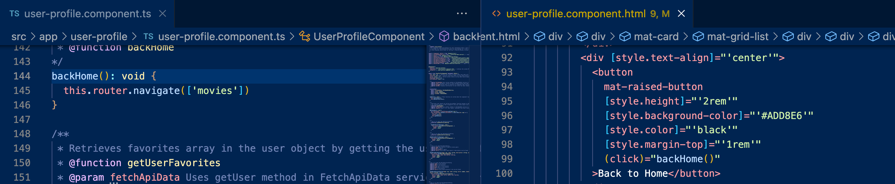
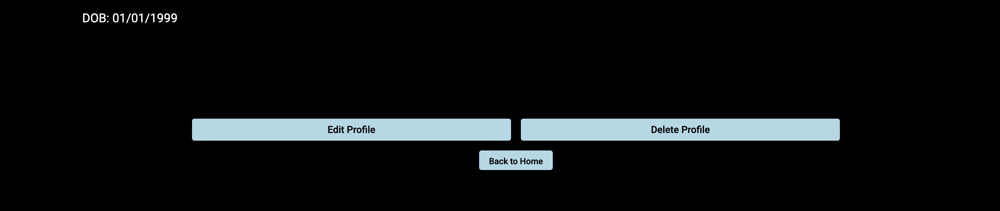
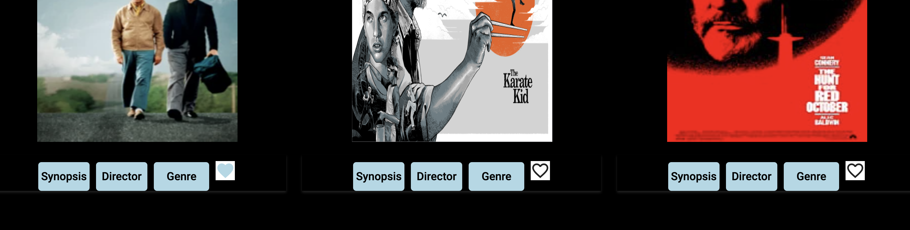
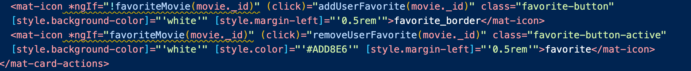
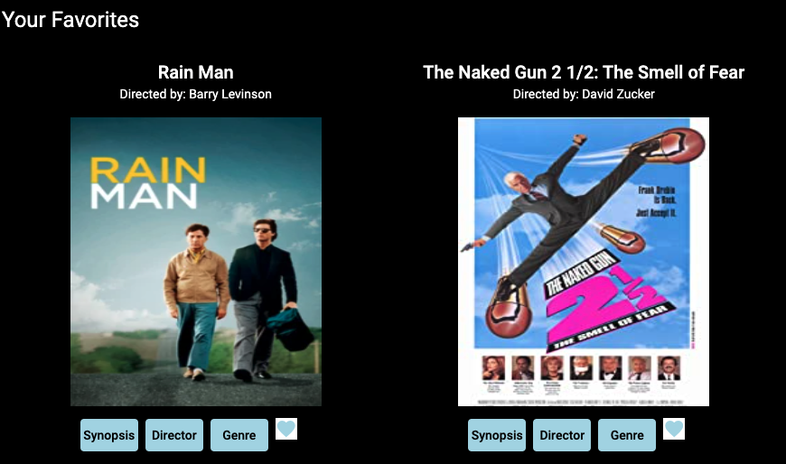

Myfavfilmz is a Full-Stack web application that I developed using the MEAN (Mongo, Express, Angular, Node) stack. It provides users (i.e., movie fans) with the ability to register to create an account, find out info about movies, and create a list of their favorite movies.

This was the final project for my CareerFoundry Full-Stack Web Development program. I had previously built the server-side using Node.js and Express.js for the API and Mongo for the database. I had followed that up with creating the client-side using React.
MyfavfilmzAngularClient was born out of the necessity to obtain some hands-on exposure to the Angular framework which, like React, is a very popular JavaScript technology in today’s tech industry. I applied my knowledge of the topics that I learned the course—such as data binding, interpolation, and templates—while developing this project. Another purpose of this project was to give students like myself the opportunity to create detailed documentation that other developers working with the project in the future could reference in order to know what my code does and how to work with it.
The main objective of this project was for me to use my knowledge of how I had already developed a client-side for my REST API and database with React and do the same thing with my new knowledge of the Angular framework. The problem that I was trying to solve was two-fold: to enable movie enthusiasts to be able to access information about different movies, directors, and genres whenever they want, and to show those viewing my portfolio that I could do so with multiple popular frontend technologies.
This project was also heavily influenced by both of its ancillary, Agile project management and documentation elements. On the project management side, I was to use user stories to create a Kanban board where I would not only manage the status (e.g., “To-Do”, “In Progress,” or “Completed”) of implementing a solution to satisfy each user story, but also estimate how much time it would take me to create each solution. The purpose of this was to gain exposure to this real-world, Agile method of teams using this tool to plan their project sprint goals and timelines appropriately. This practice was paired well with the objective of ensuring that my code was well-commented and well-documented so that my intent would be well-understood by not only my hypothetical teammates, but anyone who wished to engage with my application in the future.
The Angular framework is the main technology focused on in this project—installing it and Angular Material and building the components with the Angular CLI, using its router to allow users to shift between views, and making it responsive and creating the dialogs with Angular Material. Angular is the main technological skill that this project demonstrates.
Two softer skills are also focused on in this project—agile, project management methodology skills and collaborative skills. The former consists of developing and applying user stories to create user flows and story points that inform the creation of a Kanban board (which I used Trello for) and the latter consists of commenting on the codebase for the app and using TypeDoc to generate documentation that is useful for anyone trying to understand the app.
I first took some time to familiarize myself with the project brief. I already had a pretty good idea what I wanted this project to look like as I had recently created the client-side for the application using React. Next, I created a user flow with Google Drawings, trying to think of all the different behaviors and routes that users would experience and take while using my application. I looked at both the user stories in the project brief and my user flow and assigned story points to different tasks which allowed me to determine how much time each functionality would take to create. I then put my Trello Kanban board together, making note of these estimations.
One of the first files that I created was one to house the services logic for making API calls to the endpoints created in my API (*1).
(*1) The endpoints in my server-side API (left) and the fetch-api-data.service.ts file (right) where calls are made to those endpoints
I then created component files for each view necessary to the user and (in those components) functions that would use each of those services to fetch or modify movie or user data (*2).
(*2) The getMovies fuction in my movie-card.component.ts file that is responsible for fetching movies in the movie collection
In these components I also used the ngOnInit method (*3) to call these functions whenever the component loaded and created dialogs and other methods that implemented Angular’s router to allow users to navigate between views (*4-*5).
(*3) The ngOnInit method in the movie-card.component.ts file calls both the getMovies and getUserFavorites functions whenever the movie-card component loads
(*4) The backHome method, for example, uses the Angular router to navigate the user from their profile back to the homepage when called in a click event
(*5) Clicking the "Back to Home" button will trigger the click event and navigate the user from their profile back to the homepage
I also made sure that the localStorage was cleared of the user info when the logoutUser and deleteAccountHolder functions were executed (*6).
(*6) localStorage.clear on line 43 clears the session storage of the user credentials
I then created the HTML templates for each of these components, using the latter to pass data to the former. I gave the registration, login, movie, and user dialog methods created in different components the ability to be opened in a corresponding template by adding click events to buttons and passed data to those dialogs when appropriate (*7-*8).
(*7) Created in the movie-card.component.html file are the buttons that open up different informational movie dialogs by triggering click events
(*8) The User Interface created with the code in image *7
The templates were where I implemented a few different Angular directives. I used the ngModel to bind the values inputted from the template for the user’s personal information (*9), the ngFor directive for displaying the user and all of the movies (*10) in the general and user’s favorites collections, and the ngIf directive in icons to display and determine whether a movie was a user’s favorites or not (*11).
(*9) Lines 26, 36, 46 and 56 of the image on the right (in the HTML template file) show the ngModel directive being used to bind text entered in that input with the userData object in the image on the left (line 18 the TypeScript component file)
(*10) The ngFor repeater loops across all of the movies in the movies array
(*11) The ngIf directive in these icons is to check if the movie’s id was among the favorites in the list or not and whichever condition was true, that icon would be active. So, if the movie was not in the list the icon would be uncolored and the click event would activate the addUserFavorite function turning it blue; if the movie was in the list of favorites the icon would be blue and the click event would activate the removeUserFavorite function turning it uncolored.
Finally, I used interpolation to display movie, user and user favorite movie (*12-*13) properties in the appropriate templates.
(*12) Interpolation is used in the above code to display the movie's title (line 124), director (line 127) and movie poster (line 130).
(*13) The User Interface created with the code in image *12.
I wrapped the project up by ensuring that my app was responsive and prepared it for handoff, creating code documentation using TypeDoc.
All-in-all it took me a little more than two months to get the application how I wanted it. This was with taking little breaks here and there at times to work on other pressing projects.
It was—for the most part—a fun challenge to complete this project. I really liked learning how Angular components worked with templates to access and display information.
There were only a few minor hiccups along the way. The first was initially getting my registration and login API calls to work. My user registration and login API calls would initially return the following errors, respectively: “Error Status code 0, Error body is: [object ProgressEvent]” and “Error Status code 400, Error body is: [object Object].” I figured out the login issue first: I had forgotten to add the = sign to the apiUrl path for the user login API call in my FetchAPIData service file. The registration issue turned out to be the result of my MongoDB being inactive since I had not made new HTTP requests to it in a while (this was resolved by logging into a Mongo instance through my terminal).
The only other problem was that, for a while, I would get the following error for the getUser method in the FetchAPIData service: “Error Status code 500, Error body is: Error: CastError: Cast to ObjectId failed for value (type string) at paid "_id" for model "User"”. I resolved this by refactoring my project API params to take the username (and not the userID). This, in turn, lead to me needing to refactor all API calls in my FetchAPIData service that referenced the userID, but this was a relatively easy fix and resolved my issues.
I’m very happy with the product that I created. I don’t know if I would do anything differently in the future to get it where it is at today, but I do hope to add some features (and maybe some more movies) in the near future.